💴 CFD戦略ブリーフ — 8/10週
対象週: 2026-8-7_wk01（データ期間 2026-08-03→08-07 / snapshot 2026-08-08） ｜ ソース: review・meta・snapshot・boss(wr-2026-8-7)・週末終値チャート10枚・口座3枚・--trade --news・X実データ（2週連続取得成功） ｜ CFD正本: Boss専用トレードレポート Gold-2026-06-12_to_08-07（全期間reconciled） — 8/7に全決済しフラット
Regime: Gold Bid（gold off→bid の2段階改善）
Add risk gate: 開放（VIX 14.90<18）
Reduce: caution
介入 coord_stage: executed / IMF残弾 0（据置）
★ 8/7 NFP -23,000人（予想 +83,000）＝増加どころか純減。さらに5月 +129,000→+63,000 / 6月 +57,000→+20,000 ＝ 2ヶ月合計 -103,000人の下方修正で、過去12ヶ月平均も月+34,000人まで鈍化。内訳は地方政府教育 -50,000／小売 -19,000／金融 -14,000（2025年5月ピークから累計 -121,000）、増加はヘルスケア +22,000のみでそれも過去平均+36,000を下回る。
★ 失業率は4.2%→4.1%に「低下」したが、労働参加率が 61.5%→61.4% と5年超ぶりの低水準＝「職探しをやめた人が増えた結果の失業率低下」という質の悪い改善。一時解雇者は +153,000 増えて 921,000人。平均時給は前年比 +3.2% でインフレ圧力は残存。
→ 「雇用は純減、しかしインフレは高止まり」＝スタグフレーション型で、FRB は「conundrum（板挟み）」に置かれた。
⚠️ ここが肝：利上げは「否定」されたのではなく「9月から10月以降へ後ろ倒し」されただけ。CME FedWatch ベースで 9月利上げ確率 約42%（発表前から大幅低下・50%割れ）だが、10月までの利上げ確率は57%超＝依然として過半数が利上げを見込む。
裏付けが債券の値動きで、US2Y は日中安値 4.154% まで急低下した後、引けにかけて 4.199% まで4.5bp買い戻され（＝利回り上昇）、US10Y も 4.639% まで下げた後 4.649% で引けた。★市場は金利低下を最後まで追いかけなかった、というのが金曜の本質。
US2Y の 4.154% を割るか、4.256% を超えるかが今週すべての起点。
🏆 Gold CFD キャンペーン終了（6/12 建て → 8/7 全決済・57日）：確定6件・6勝0敗（勝率100%）・pnl_%合計 +21.06%・ロット加重 +505.75 pt·Lot、最大逆行は7/17週の安値4,012.7時点で -76.7 pt·Lot。
当週分は X5 + X6 = +224.25 pt·Lot（+10.94%） — X5＝8/6 10:00 に0.5Lotを4,300で計画決済（+203.00pt／+101.50 pt·Lot／+4.95%。トリガーは実行帯4,250-4,300への到達＋根拠の質の劣化＝イラン外務省が交渉を否定）、X6＝8/7 23:30 に残0.5Lotを4,350で決済（+245.50pt／+122.75 pt·Lot／+5.98%。NFP急騰で高値4,370.51→1分足ダブルトップ切り下げ）。玉割当はFIFO採用（両玉とも益のため論理制約が働かず、合計pt·Lotは割当に依存しない）。
三相＝I.収穫(6/12-6/29・建てた当日から6日で3回決済・+252.5 pt·Lot・2.0→0.5Lot)／II.耐久(7/1-7/31・積み増して1.5Lot・7月中旬に最大逆行・原油急騰下でgold=off)／III.回収(8/1-8/7・ホルムズ→NFPで4,370.51まで・1.0→0Lot)。
★対称性：4,097玉は 6/18に4,300で半分を、8/6に残りを同じ4,300 で決済＝同一建値・同一決済価格を7週間隔で2回。
1. 10ペア 30日スナップショット
| 銘柄 | 最新 | 30日% | wk05→wk01 |
|---|
| XAU/USD | 4,340.700 | +5.09% | +291.6 (+7.20%) off→bid |
| US100 | 29,722.301 | -0.02% | +1,448.1 (+5.12%) |
| JP225 | 65,606.711 | -3.15% | +1,244.7 (+1.93%) |
| USD/JPY | 157.745 | -2.95% | +0.345 NFP後ほぼ無風 |
| WTI | 78.180 / Boss 77.08 | +8.46% | 週間 -8.96%（既知のフィード差） |
| US10Y | 4.660 / Boss 4.649 | +2.67% | -0.085 |
| US2Y (真・Boss) | 4.199 | 安値4.154→+4.5bp戻し | -0.063 |
| US30Y (Boss・新規) | 5.202 | 上は5.28＝2007年来高値 | 10s30s +55.3bp |
| 5Y (^FVX) | 4.362 | +2.18% | -0.098 belly の瘤が縮小 |
| US3M | 3.710 | +0.76% | +0.028 |
| VIX | 14.900 | -5.93% | -1.09 → gate開放継続 |
| BTC/USD | 64,880.191 | +2.67% | +2,066.4（Boss 64,975・ほぼ横ばい） |
Boss実測: NDX 29,722.30(+1.19%) ／ SP500 7,757.64(+0.62%)＝8/6に史上最高値 ／ ダウ 54,036.93(+0.28%) ／ ナス総合 26,690.62(+1.30%) ／ JP225現物 65,606.71(-0.12%)・CFD夜間 66,698→66,248 ／ USDJPY 157.78(-0.64) ／ Gold 4,342.41(+2.43%) 高値4,370.49 ／ WTI 77.08(-0.21) 高値78.77/安値76.53 ／ DXY 99.604（8/7当日は99.422まで） ／ EURUSD 1.1558 ／ BTC 64,975(+0.09%)
10ペア30日 正規化プロット
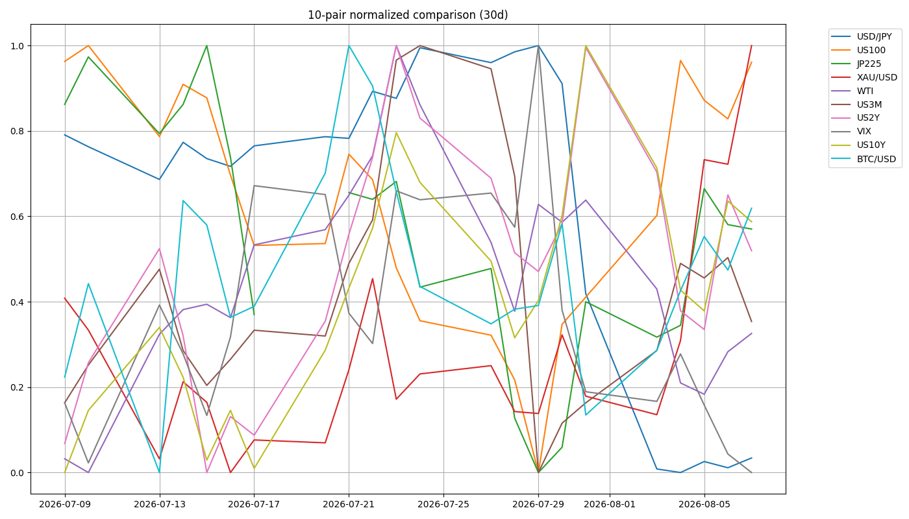
2. ★ 金利カーブ — 再利上げ織り込みの「瘤」が萎んだ
3m10s（主ゲージ）+95.0bp / positive（wk05 +106.3 → フラット化）
5s10s（^FVX=5y proxy）+29.8bp / bear_steepening（Δ+2.8bp）
★ 真の 2s10s（Boss）+45.0bp（wk05 +45.6bp → ほぼ横ばい）
★ 10s30s（Boss・新規）+55.3bp（US30Y 5.202 − US10Y 4.649）
belly_premium+26.0 → +18.9bp（縮小）
structure / recessionbelly_elevated / positive（逆イールドは遠い）
belly_premium の縮小が今週の実体：5Y(^FVX) が 4.460 → 4.362（-0.098） と front(3M +0.028) より大きく下げ、直線補間からの乖離が 26.0bp → 18.9bp へ。★「9月に利上げがある」という織り込みの瘤が萎んだことの表れで、9月利上げ確率 64%→42% への低下と整合する。
3m10s は +106.3→+95.0bp とフラット化したが positive のまま＝逆イールドは遠い。景気後退シグナルではなく「利上げパスが後ろへずれた」の反映として読む。X市況も「フロント（2年）は雇用ショックで低下＝利上げ織り込み剥落、30年は5.2%前後で相対的に高止まりしタームプレミアム・供給・インフレ粘着を意識」「短中期はハト派化、超長期は警戒残存のツイスト寄り」（@O4SI5）と整理。
10s30s（★2026-08-09 訂正・未検証）：トレードレポート §8-2 が 10s30s をゴールドの補完監視線として提案（拡大＝タームプレミアム／ソブリン信用の象限で金に追い風／縮小＝純粋なディスインフレで金には何も来ない）。
★ 当初ここに書いた実測系列（7/31 +54.9 → 8/4 +55.4 → 8/5 +56.1（拡大・金+3%）→ 8/7 +54.4）は取得時刻が揃っておらず、時系列として無効だった（NY引け／ロンドン午後／時刻混在が混在し、8/5 は30Yと10Yで別々の時刻の値を引き算していた。日次変動1〜3bpの指標では変化の大半が時刻差になる）。
機械の close-to-close 系列（NY引け）で引き直すと 7/31 53.0 → 8/4 56.3 → 8/5 55.7 → 8/6 54.3 → 8/7 55.1。★金が週で最も上げた 8/5（+3.67%）に 10s30s は 0.6bp 縮小していた＝当初の読みと逆。→ 「拡大＝金に追い風」を支持する実測例は消えた。機構の議論は独立に立つが実測の裏づけは無い＝未検証として保持する。
★ 2026-08-09 に US30Y: ^TYX を実装済（spread_10s30s_bp / change_10s30s_bp_1w / change_10s30s_bp_30d / direction_10s30s_1w）。ただし判定はしない（レジームラベル・複合スコアに混ぜず、閾値も未設定）。正本は機械の close-to-close 系列とし、手読み値と1本の時系列に混ぜない。
3. レジーム & ゲート状況
機械レジーム
Gold Bid
equities=flat / vol=normal / oil=range / gold=bid / crypto=range / yields=rising
wk05「Equities Down / Oil Surge」から3項目が同時に転換（gold は off→bid の2段階改善）
Add risk ゲート
開放
VIX 15.99 → 14.90 < 18。ただし骨格は「利上げ先送りによる株高・金高、ただしCPI待ちの一時的な安心感」＝8/12 CPIがスイッチ。8/11(火)は日本が山の日で休場＝お盆の薄商いでボラ増幅
ポジション
フラット
★Gold CFD は8/7に全決済＝ヘッジ枠ゼロ。再構築は4,302.18 を上抜けサポートとして守れることを確認してから。介入は coord_stage=executed / imf_ammo=0 / zone=calm（据置）
4. シナリオ（★主要リスクごとに反対方向の分岐を明示 — 設計変更）
メインCPI待ちのレンジ。押し目買い優先・追いかけ買いはしない
A CPI下振れ利上げ観測ほぼ消滅→株と金の同時上昇・DXY 99.527割れ・EURUSD 1.16
B CPI上振れ10月利上げ確率70-80%→株安・ドル高・金は板挟み（インフレヘッジ vs 利上げ警戒）
C 雇用の二次反応「雇用純減＝景気減速」が意識され業績懸念が金利低下メリットに勝つ／逆に一時解雇+153,000が一過性なら反発
D ホルムズ交渉決裂WTI 82.749へ戻しインフレ再燃／逆に正式合意なら70ドル方向
★ 設計変更（トレードレポート §7-3 の指摘を受けた是正）：§7-3 は「wk05のシナリオツリーはBが地政学エスカレーションだけで、デエスカレーションのシナリオが1本もなかった。そのため原油急落起点の株高を受け止める枠がなく、US100のレンジ想定（28,500-28,800が売り手優勢）が29,112まで破られた」と指摘し、設計ルール化：シナリオツリーには主要リスクごとに反対方向の分岐を明示的に置くと定めた。→ 本週から労働市場・ホルムズ/原油・ドル円・ゴールド・米国株・日本株の6項目すべてに悪化側と改善側の両分岐を明示している。これはアーカイブ側（ClaudeCode）が作成した成果物への指摘であり、そのまま受け止めて設計に反映した。
5. CFD 銘柄別アクションプラン
Gold (XAU) 全決済・フラット / 4,302.18 が試金石
現物
4,342.41（+103.18／+2.43%）・日中高値
4,370.49 で
7週間ぶり高値圏。動画のターゲット4,288と抵抗帯4,290をあっさり突破し
日足の抵抗4,302.18も上抜け。snapshot も
off→bid の2段階改善（30日+5.09%・
週次+7.20%）。
上昇理由の3層：①雇用純減＋インフレ高止まり＝スタグフレーション懸念（金の最も好きな環境） ②ドル安（DXY 99.604で6週ぶり安値圏・サポート99.527の直前） ③ホルムズ海峡再開に向けたイラン=オマン交渉進展によるリスク資産改善と、それに伴う原油下落（金は原油と逆相関で推移してきた経緯）。加えて中国など中銀の継続買いという構造要因。
上=4,370.49→4,380.85→4,400→4,651.26 ／ 下=4,302.18（旧抵抗→新サポート）→4,248.25→4,216.34 ／ 最終防衛 $3,940（2026-08-08以降の新基準）。4,302.18 を上抜けサポートとして機能させられるかを確認しつつ押し目買い、割れれば「一日限りの過剰反応」と判断して4,248まで撤退。
★忘れないこと：金は今年1/29の史上最高値 5,585〜5,589 から依然20%以上下にあり、日足の大きな下降チャネルの中の戻り。★上値追随の条件は DXY 99.527割れ（§8-2：ドル安だけでは足りず「ドル安 かつ BEが崩れないこと」／8/4にDXYがヒゲで99.69を割ったが金は下げた）。※2026-08-09 訂正: 当初「かつ 10s30s拡大」としていたが、その実測根拠が無効と判明したため条件から外した（未検証の仮説として観察のみ）。X市況は「中期は強気優勢だが短期は抵抗帯での利確・売りセットアップも目立つ＝勢いBull＋短期ダイバージェンス型」（@XauBossAnalysis が4,340-4,350のショート案、@PeterLBrandt が過熱・調整リスク）。
USD/JPY NFP後もほぼ無風＝介入効果の剥落
157.78（-0.64）。★
今週一番の注目点は、米金利が低下し DXY が 99.604 まで売られたにもかかわらず
ドル円だけがほとんど動かなかったこと。
理由3つ：①失業率は逆に低下して4.1% ②利上げは否定されず10月に先送りされただけ ③円側の要因（財政拡張・日銀の遅れ）が重く介入効果が剥落中。CNBC検証では7/31の日米協調介入で163台から155ちょうどまで進んだが、その値幅の半分近くを既に戻して158.50前後に落ち着いた。BofAは当局の短期目標を「155割れ」と見ていたが155は一瞬タッチしただけ。
上=158.100→158.50-158.56→159.20-159.50（戻り売りゾーン）→161.013 ／ 下=157.219/157.157→157.086→156.589（割れで介入警戒モード）→155.7 ／ 157.0〜158.5のレンジで上限売り・下限買いの往復。「円安に戻りやすい」という見立ては維持、ただし159.30の売りゾーンには届かずレンジ上限を切り下げ。
ベッセント財務長官『介入はシグナル、方向を変えるのは政策』、PGIMのエコノミスト『介入だけで円安トレンドは反転しない、むしろ裏目に出る可能性がある』。X市況も @Francesc_Forex が「介入は時間稼ぎ、金利差が本質」、全体は「介入で一度止めたが効果は薄れつつある／ファンダ（金利差）はなおドル支持」でBossと完全一致（X側の156.65サポートはBossの156.589とほぼ同水準）。
US100 / SP500 強気シナリオが的中・トリガー発動済み
NDX現物
29,722.30（+1.19%）、
S&P500 7,757.64（+0.62%）は8/6に史上最高値を更新しその週は
4月以来最強の地合い。ダウ 54,036.93（+0.28%）、ナス総合 26,690.62（+1.30%）。金利低下＝グロース株買いという素直な反応で
「29,560超えで上昇」というトリガーは既に発動済み。
上=29,870→30,000→30,922 ／ 下=29,560〜29,600（上抜けたサポート）、29,560割れで初めて「ダマシ」を疑う。wk05の「29,129割れ→28,718」は当面棚上げ。
★反対方向の分岐：「雇用純減＝景気減速」が意識され始めると金利低下メリットより業績懸念が勝つ局面に反転し、そのスイッチは8/12のCPI。X市況は「Bad news is good news」でATH更新を正当化する投稿が多い一方、高バリュエーション・レバレッジ・季節性（9月）を理由にした警戒も一定数あり、全体は「乗りつつも天井感を意識する二層構造」＝追いかけ買いはしない。
JP225 上ギャップ想定だが「寄り天」が典型
現物終値
65,606.71（-0.12%）だが、
日経CFDが夜間セッションでNFP後に高値66,698→66,248まで買われ、月曜は600〜650円程度の上ギャップで始まる計算。
66,340円の上抜けトリガーは夜間で既にクリア済み。
上=67,353→67,596 ／ 押し目=66,340〜66,000 ／ 66,000を明確に割ればギャップ埋め＝65,606（金曜現物終値）。★ギャップアップ後の「寄り天」は日経の典型パターンなので寄り付きで飛びつかず押し目を待つのが定石。
ドル円がほぼ動いていない（円高が進んでいない）ことは日本株にとって追い風の維持を意味する。SBG・アドバンテスト主導、TOPIX浮動株400億円未満除外の話は変更なし。--news は東芝の4-6月期純利益が前年同期比約30倍の4兆4673億円（第1四半期として過去最高／キオクシア株の評価益が寄与）を報じ、wk04以降続く「キオクシア/メモリ主導」テーマが保有側の決算という形で数値化された。
WTI 上目線を一旦破棄・TACOリスク顕在化
77.08（-0.21）、日中高値78.77・安値76.53、
週間 -8.96%。★
動画の上昇シナリオ（中東情勢悪化→79.50）は不成立で、
実際に進んだのは逆の「イラン=オマンによるホルムズ海峡再開合意が近い」という緩和ニュース。
「イラン情勢は緩和と悪化が毎日入れ替わる」というTACOトレードのリスクが顕在化した形。snapshot も surge→
range へ。
上=78.77→79.762→82.749 ／ 下=76.705（重要／割れると加速）→74.899→70.00 ／ 79.50ターゲットの上目線を一旦破棄し、76.705の攻防を見て方向を決める。ホルムズ再開が正式合意なら70ドル方向、交渉決裂なら一気に82.749まで戻す＝ヘッドライン主導の二極化相場＝持ってもポジションは軽く。
★X独自の付加価値：「紙の価格は織り込んだが、海（実物流）はまだ戻っていない」（@Sham1069204 が実タンカー本数はまだ細いと懐疑）、「イランは信用できない／時限的」（@DailyIranNews / @Pettunia14）＝持続安を疑問視する声とセット。機械(CL=F 78.180)とBoss参照フィード(77.08)には既知の乖離あり。
BTC/USD 株高・金急騰の中で動かなかった
64,975（+0.09%）でほぼ横ばい（snapshot 64,880.19・30日+2.67%）。
64,132割れは未発生。crypto=range 継続。
下=64,132割れ → 57,744（条件付きショート＝条件成立まで待つ） ／ ★株高＋金急騰という強い追い風の中で動かなかった相対的弱さは継続監視で、wk05の「株が崩れた場合の先行指標」という位置づけを維持する。
EUR/USD / DXY 1.15741 ブレイク待ちの上目線
EURUSD
1.1558（4H 1.15317を上抜け、日足レジスタンス
1.15741に接近）。DXY
99.604で
6週ぶり安値圏、サポート
99.527の直前（8/7当日は
99.422まで）。
★DXY 99.527 が全通貨ペア共通のトリガー：割れればドル全面安の継続で EURUSD の上放れ・ゴールドの上値追随が同時に走る。ただしゴールドには「BEが崩れないこと」という第2条件が要る（§8-2）。※2026-08-09 訂正: 第2条件を当初「10s30s拡大」としていたが実測根拠が無効と判明し、未検証として条件から外した。
6. 週内タイムライン
- 8/10(月) 日経は600〜650円の上ギャップ想定（CFD夜間66,248）。★寄り天が典型＝飛びつかず66,340〜66,000の押し目を待つ。ゴールドは4,302.18を上抜けサポートとして守れるかを最初に確認。
- 8/11(火) 日本は休場（山の日）。お盆の薄商いが本格化し、少ない出来高で値が飛びやすくなる＝ボラ増幅に注意。
- 8/12(水) ★米7月CPI — 今週最大のイベント。強ければ10月利上げ確率70-80%へ→株安・ドル高・金は板挟み／弱ければ利上げ観測ほぼ消滅→株・金の同時上昇・EURUSD 1.16。どちらに転んでもボラは金曜より確実に大きくなる。
- 8/13(木) 米7月PPI。CPIの確認材料。
- 8/28(金) BLS年次ベンチマーク改定の速報値（QCEW準拠）。過去1年の雇用者数が大幅に下方修正されるリスク。
- 週内随時 US2Y 4.154 / 4.256（★今週すべての起点）／DXY 99.527／Gold 4,302.18／WTI 76.705／ホルムズ交渉の行方。
7. 監視トリガー（毎朝チェック）
★ US2Y 4.154% 割れ / 4.256% 超え→ 今週すべての起点。超え＝利上げ観測復活で株と金にダブルパンチ
★ 8/12 CPI→ 上振れで10月70-80%＝株安ドル高・金は板挟み／下振れで株・金の同時上昇
★ Gold 4,302.18→ 守れれば押し目買い、割れれば4,248.25へ撤退。最終防衛 $3,940
★ DXY 99.527 割れ→ ドル全面安の継続（現値99.604＝0.08の距離）。金は BEが崩れないこと が第2条件（10s30s拡大は 2026-08-09 に未検証として条件から除外）
USDJPY 156.589 割れ / 158.50-158.56 上抜け→ 介入警戒モード / 159.20-159.50 の戻り売りゾーン
WTI 76.705 割れ / 82.749 戻し→ 74.899→70.00 / インフレ再燃
US100 29,560 割れ→ 初めて「ダマシ」を疑う（→29,129→28,718）
JP225 66,340-66,000 / 66,000割れ→ 押し目ゾーン / ギャップ埋め 65,606
BTC 64,132 割れ→ 57,744へ。株が崩れた場合の先行指標
8/28 BLS年次ベンチマーク改定→ 過去1年の雇用者数が大幅下方修正されるリスク
8. Boss提供チャート（週末終値 / 2026-08-07 close・10枚）
XAU/USD — 4,342.41(+2.43%)・高値4,370.49で7週間ぶり高値圏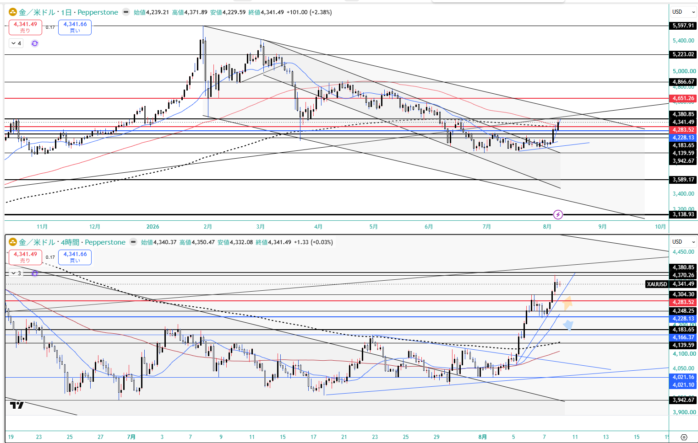
US100 — 29,722.30(+1.19%)・29,560超えトリガー発動済み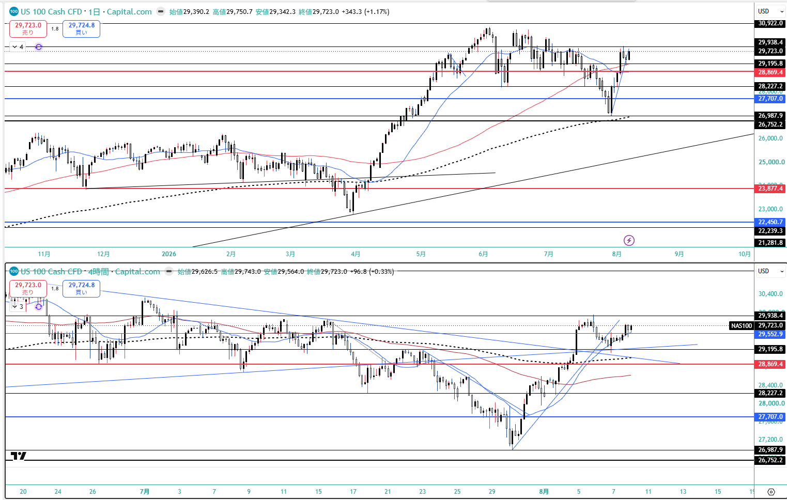
USD/JPY — 157.78・★NFP後もほぼ無風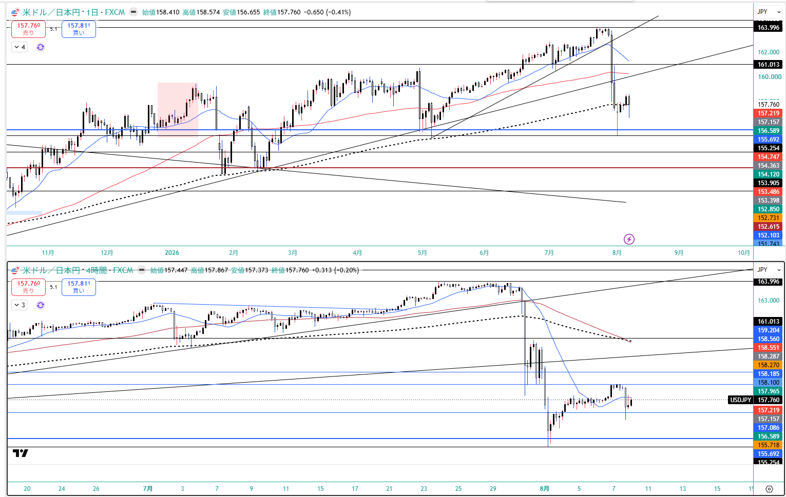
JP225 — 現物65,606.71・CFD夜間は66,248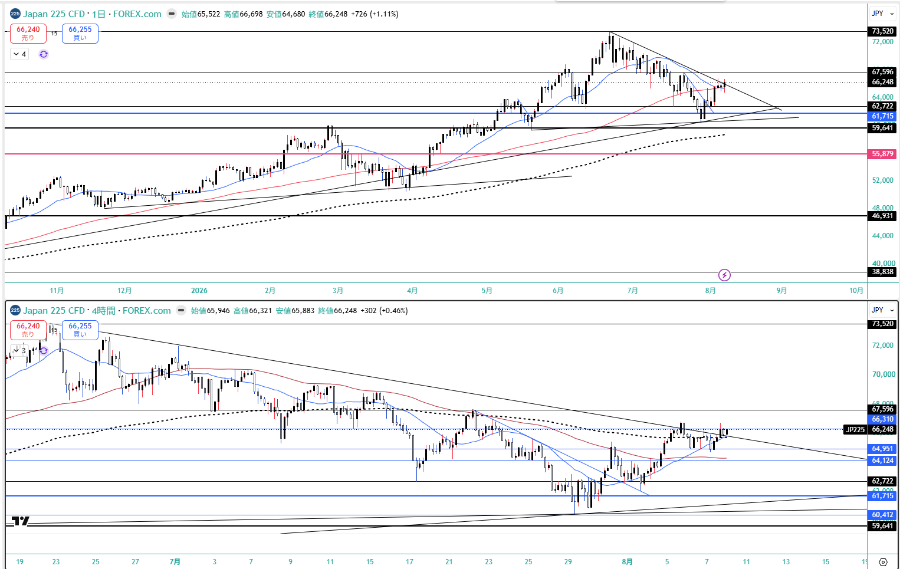
WTI — 77.08・週間-8.96%（ホルムズ再開交渉）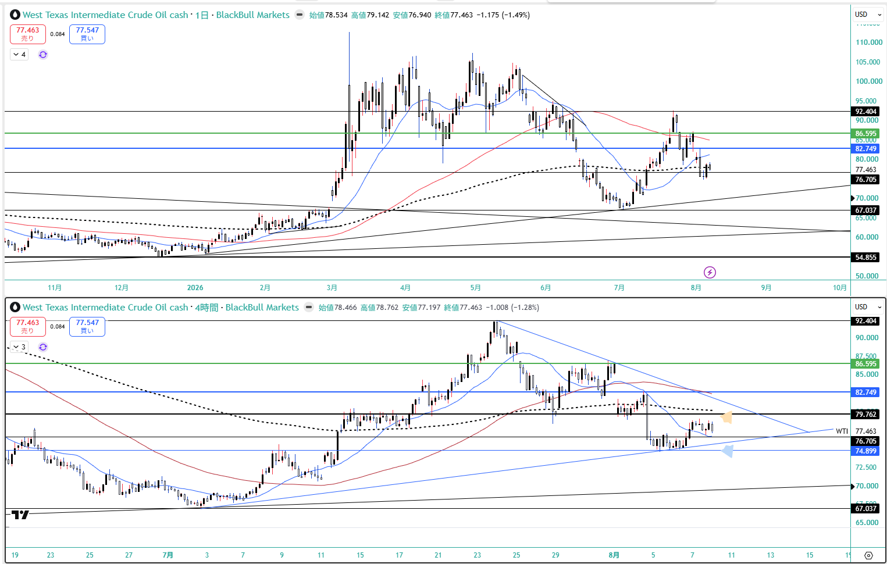
DXY — 99.604・6週ぶり安値圏（サポート99.527の直前）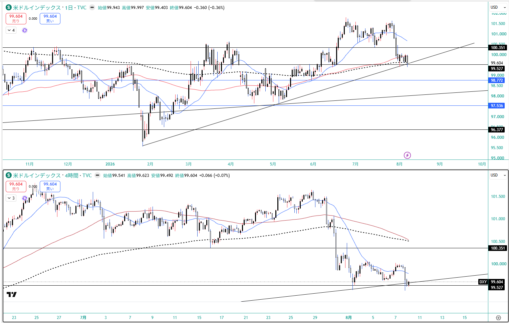
EUR/USD — 1.1558・日足1.15741に接近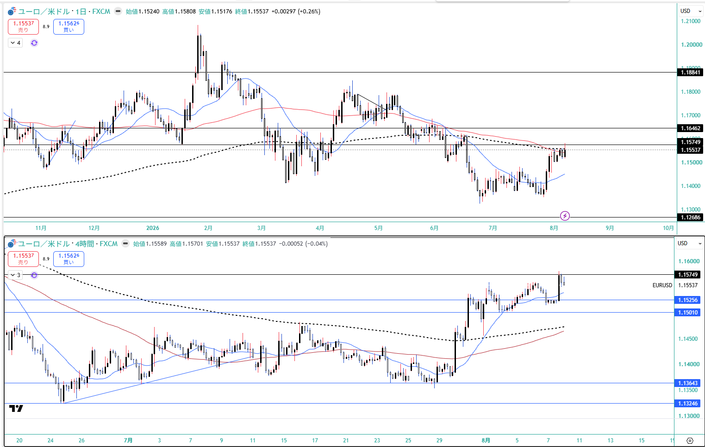
US2Y — 4.199%（安値4.154→引けにかけ+4.5bp戻し）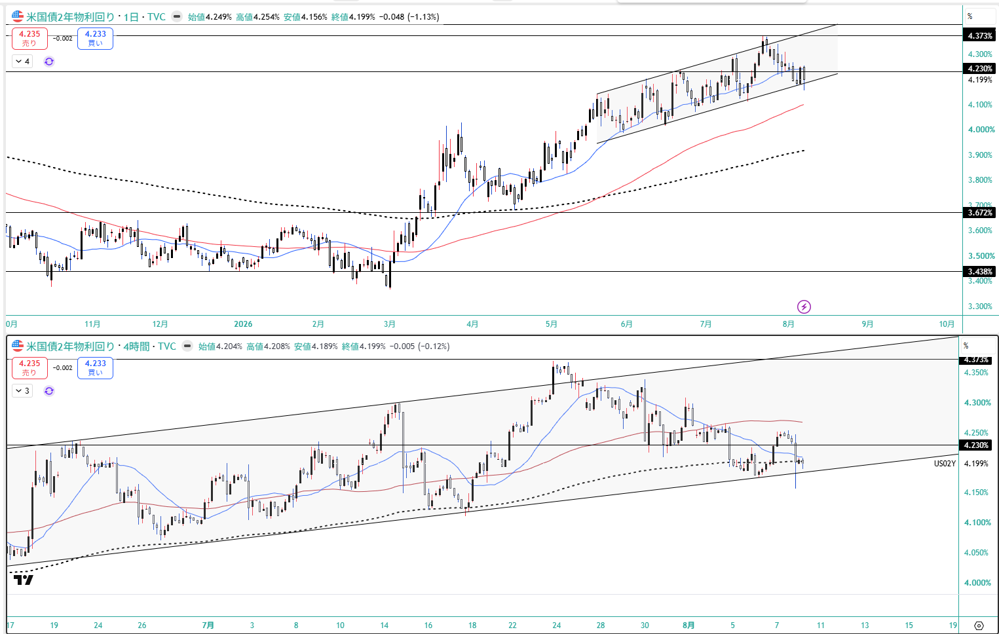
US10Y — 4.649%（4.639%まで下げた後）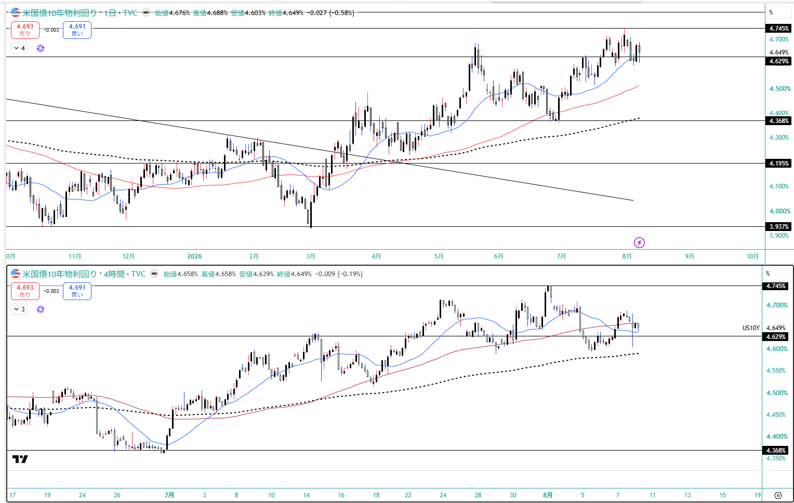
★US30Y（新規） — 5.202%／10s30s = +55.3bp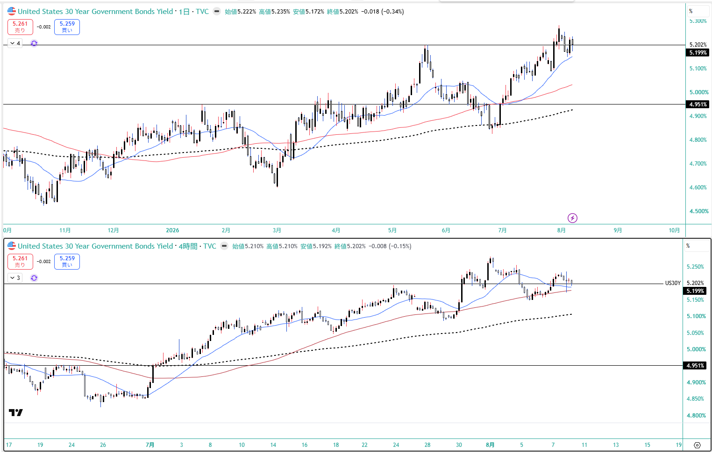
9. GMポートフォリオ（2026-08-08 13:34）
総資産
4,993,914円
前週 4,833,577円 → +160,337円
評価損益
+417,056円 / +9.11%
前週 +256,719円 / +5.60% → +3.51pt
株数変更
なし
東証・米国株とも変更なし。長期コアは維持
国内株式(現物)4,469,189円 / +438,584円 / +10.88%（特定 1,948,513円 / NISA 2,520,676円）
米国株式523,017円 / -21,528円 / -3.95%（外貨建 3,301.47 USD / -77.37 USD）
★ 米国株が劇的改善：-18.10% → -3.95%（+77,048円／外貨建 -604.36 → -77.37 USD ＝ +526.99 USD）。銘柄別は GDX -114.60→+82.05 USD（+196.65・黒字転換）＝金急騰の直撃、IONQ -111.16→+10.08 USD（+121.24・黒字転換）、SPCX -378.60→-169.50 USD（+209.10）＝8/6のロックアップ解除を+1.5%で吸収。
国内株も GXゴールド特定が -8,614→+438 で黒字転換・GXゴールドNISAも -87,600→-62,800（+24,800）＝★金急騰が現物側にも波及。明暗はwk05から入れ替わりで、安川電 -15,600→+19,700（+35,300）・三菱重 -9,900→+16,400（+26,300）が改善する一方、ファナックは +88,300→+33,000（-55,300）で最大の重し（wk05では牽引役だった）。
★ CFDをフラットにした一方で現物側の金エクスポージャーは残存しており、Goldが4,302を割れば口座にも逆風。
⚠️ 本資料は 2026-8-7_wk01 の確定データ（snapshot 2026-08-08 / review / meta / Boss市況 wr-2026-8-7 / 週末終値チャート10枚 / 口座3枚 / --trade --news / X実データ）＋ Boss専用トレードレポート Gold-2026-06-12_to_08-07（6/12建て→8/7全決済の全期間reconciled） に基づく整理であり、創作・ソース外情報は含まない。
★ キャンペーン終了：確定6件・6勝0敗・+505.75 pt·Lot（+21.06%）、最大逆行 -76.7 pt·Lot。6件の決済すべてが価格目標ではなく「根拠の状態変化」をトリガーにしている（X3=15分ダウ崩れ／X4=週足Fibo38.2割れ＝上位足の根拠が一段落ちた／X5=実行帯到達＋根拠が当事者に否定された＝根拠の質の劣化／X6=1分足DT切り下げ）。他に機能した設計は ①値ではなく日付でロットを落とす（4,302.18の反落をほぼ天井で捕捉）／②損益分岐の事前計算（X + 3,940 − 8,201.5 = 0 → X = 4,261.5 ＝バンドの下端と上端で符号が変わることを事前確認）／③反応型ルールには時計の上限を対にする／④上位足で環境確定→下位足で執行。
★ 最終防衛ラインは 2026-08-08 以降 $3,940（2026-06〜07-31 は $3,950）。これは誤りの訂正ではなく基準変更で、6-7月の記録に遡って $3,940 で上書きしない（当時運用されていた線は $3,950 であり、書き換えると「3週連続で $3,950 を割らなかった」という判断の記録が壊れる）。新基準は今回のキャンペーンで一度も到達しておらず、実運用での検証は未実施。
★ 設計変更：トレードレポート §7-3 の指摘（wk05のシナリオツリーに反対方向の分岐がなくUS100レンジ想定が29,112まで破られた）を受け、本週から主要リスクごとに反対方向の分岐を明示。
★ X-Search は2週連続で取得成功（hermes -p grok -z "<query>" -t x_search,web,vision --accept-hooks）。実ハンドル付き7トピックすべてでBoss市況と方向一致。X独自の付加価値は①原油の「紙は織り込んだが海（実物流）はまだ」②株の「乗りつつも天井感を意識する二層構造」。各ポストは市場参加者の解釈であり1次報道とはレイヤーを分ける（Grok自身も「Xの集計はリアルタイム合成であり公式BLS/CME/取引所の一次ソースそのものではない」と明記）。
★ 未確定・未実装：§3-1 の E2 建値 $3,992 vs $3,990 は約定履歴が未確認のため確定させていない。§8-2 の 10s30s を機械の監視線にするには TRADE_PAIRS への US30Y: ^TYX 追加が必要で今週は未実装（ボス検討中）。§8 の年輪候補4件は docs/system/ へ未昇格（特に 8-1「原油↑→金↓」は 8/7 の NFP純減で前提が変わりつつあり、適用範囲の再検証が近く必要）。WTI は機械(CL=F 78.180)とBoss参照フィード(77.08)に既知の乖離あり。
投資助言ではなく GM運用の作戦整理。最終判断はミナト。 生成: ClaudeCode / 2026-08-08。